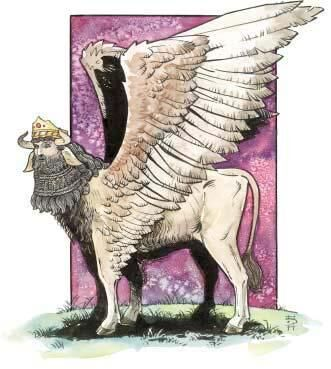

大型魔法兽

| 生命骰： | 9d10+27（76生命值） |
| 先攻： | +0 |
| 速度： | 30英尺，飞行60英尺（一般） |
| 防御等级： | 14（-1体型，+5天生），接触9，措手不及14 |
| 基本攻击／擒抱： | +9/+17 |
| 攻击： | 挥击+12近战 |
| 全力攻击： | 2挥击+12近战 |
| 伤害： | 挥击1d6+4 |
| 面宽／触及： | 10英尺/5英尺 |
| 特殊攻击： | 类法术能力，践踏 |
| 特殊能力： | 强酸抗力5，寒冷抗力5，黑暗视觉60英尺，星界穿梭，闪电抗力5，幻化灵体，火焰抗力5，昏暗视觉，反邪恶法阵，理性思维，音波抗力5，法术抗力14，超凡稳定 |
| 豁免： | 强韧+9，反射+6，意志+7 |
| 属性： | 力量19，敏捷11，体质17，智力22，感知18，魅力16 |
| 技能： | 平衡+20，专注+15，交涉+17，知识（宗教）+18，知识（位面）+26，聆听+24，察言观色+16，侦察+24，生存+4（在其他位面上+6） |
| 专长： | 盲斗，飞越（B），精通冲撞，精通击破武器，猛力攻击 |
| 地域： | 任何陆地和地下 |
| 组织： | 单独，成对，或宗教议会（2只加1-3只翼狮） |
| 挑战等级： | 10 |
| 宝物： | 标准 |
| 阵营： | 总是守序善良 |
| 进化： | 10-12HD（大型）；13-24HD（超大） |
舍度是翼狮(lammasu)（见《怪物手册》）的近亲，它们穿越物质位面、以太位面和星界，宣扬律法和善良的美德，帮助那些需要教导或保护的人。从脖子以下，舍度看起来像是巨大的有翼公牛，肌肉发达，两前腿之间和后面还有第五条腿。这些严肃的生物有着人类的头部，留着精心编织的胡须和紧紧卷曲的长而硬的黑发。舍度带着一种庄严、有点超然的神态，仿佛他们戴着的镀金王冠标志着他们是国王。如果这些生物曾经拥有陆地王国，那么这些土地很可能已经消失在历史的长河中；舍度不会向任何人提起它们的王冠。
守序善良的牧师有时会召唤舍度，请求就位面重要事务提供咨询，或在重要事件如新领袖的选举或救世主之子的诞生期间守护他们的神庙。舍度有着细致入微的超脑――它们对心智控制的免疫以及专注于特定任务不受干扰的能力，使它们成为出色的顾问和守卫。
舍度会说通用语、龙语和天界语。它们更倾向于心灵感应交流。
（adnd的舍度会心灵感应，pf的舍度会心灵感应，连戴上舍度王冠的图腾师都会心灵感应，描述也说舍度会心灵感应。但他就是没有这个能力）
尽管舍度能够用强有力的蹄子践踏对手，但在对抗熟练的敌人时，它们在物理战斗中表现不佳。在这种情况下，它们更喜欢飞到空中，从那里尝试使用支配人类来控制敌人。如果情况变得危险，它们会跳到以太位面或前往星界。
类法术能力（Spell-Like Abilities）：随意――锐耳术/鹰眼术，识破隐形，心灵遥控； 3/天――支配人类。
施法者等级 9；豁免 DC 13 + 法术等级。
践踏（Trample）（Ex）：在其回合的每个标准动作中，舍度可以跑过至少比自己小一个体型的对手。这次攻击造成2d6+4点钝击伤害。被践踏的对手可以尝试以-4的减值进行借机攻击，或进行反射豁免（DC 18）以减少一半伤害。
星界穿梭（Depart）（Su）：舍度每周一次可以像18级术士一样施放星界投影(astral projection)。这个能力只影响舍度。
幻化灵体 (Ethereal Jaunt, Su)：舍度可以以自由动作从以太位面移动到物质位面，并以移动动作再次移动回来。该能力与 15 级术士施展的幻化灵体相同。
反邪恶法阵（Magic Circle against Evil）（Su）：舍度持续辐射一个反邪恶法阵，影响20英尺半径。这个光环可以被解除，但舍度可以在下一回合以一个自由动作再次创造它。
理性思维（Rational Mind）（Ex）：舍度的超脑使其免疫于影响心灵的效果。
超凡稳定（Uncanny Stability）（Ex）：舍度的五条腿赋予了它更强的稳定性，使其免疫冲撞。这个能力还防止了像毕格比飞击掌(Bigby's forceful hand)这样的法术冲撞。
技能：舍度在平衡、聆听、知识（位面）和侦察检查上有+8种族加值。，SHEDU Large Magical Beast Hit Dice: 9d10+27 (76 hp)，Initiative: +0 Speed: 30 ft., fly 60 ft. (average)